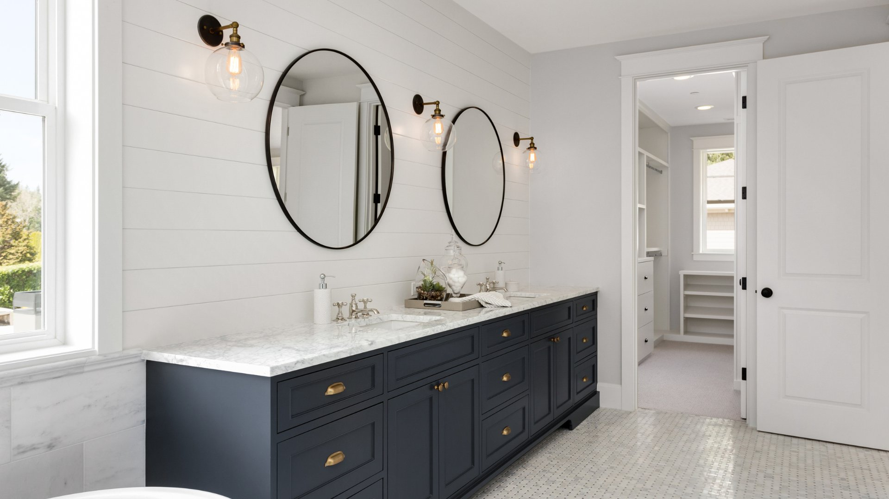

City Plumbing Services works across Didsbury, covering large period properties, Victorian detached homes, and modern apartments across the M20 postcode. Gas Safe registered, fully insured, available seven days a week.
Didsbury is one of the most desirable suburbs in Greater Manchester, and the properties here reflect that. The M20 postcode is dominated by large Victorian and Edwardian detached and semi-detached houses — many of them with four or five bedrooms, original features, and heating systems that have been upgraded and modified at various points over the past hundred years. Working in these properties requires both technical knowledge and a certain care for the fabric of the building.
We've carried out plumbing work across Didsbury Village, West Didsbury, and East Didsbury for many years. The large period houses along Burton Road, Palatine Road, and School Lane often have complex plumbing arrangements — gravity-fed systems with multiple cylinders, separate hot and cold feeds, or older vented systems that are being converted to modern unvented setups. We take the time to understand what's already in place before proposing any work, and we price honestly from the outset.

All our services are available to Didsbury homeowners and landlords across the M20 postcode.
Burst pipes, major leaks, no hot water — we cover Didsbury 24/7. In older period properties, emergency failures can spread quickly through complex pipework. We respond fast and know how to limit damage in large Victorian houses.
Annual services, breakdown repairs, and boiler replacements for Didsbury properties. Many large M20 houses are running older system boilers or combination units that are struggling to meet demand — we can advise on the right upgrade path.
Premium bathroom renovations for Didsbury period properties. We project manage the whole job — design, supply, plumbing, tiling — and have experience working in high-value homes where the standard of finish matters.
New heating systems and upgrades for large Didsbury homes. Converting from gravity-fed to pressurised systems, adding heating zones for different floors, and installing smart controls that work properly in multi-room Victorian properties.
From dripping taps to low water pressure in large period houses — no job too small. We carry out all general plumbing repairs across Didsbury with same-day availability on most issues.
Some of Didsbury's larger properties are let as HMOs or professional house shares. We work with landlords across M20, carrying out gas safety inspections and issuing CP12 certificates the same day.
The houses in Didsbury are, by Greater Manchester standards, substantial. The Victorian and Edwardian detached and semi-detached properties along Burton Road, School Lane, and Lapwing Lane were built for professional families at a time when domestic plumbing was still relatively new. Pipes were oversized by modern standards, water systems were gravity-fed from cold water tanks in the loft, and hot water cylinders were large, copper-jacketed, and central to the home's functioning. Many of these systems are still in place — partially updated over the decades but often retaining original pipework in parts of the house that haven't been touched since it was built.
The main challenge in Didsbury period properties is understanding what's actually behind the walls and under the floors before you start any work. Old lead pipework is relatively common in houses of this age, particularly on the supply side. It's safe in normal use but requires care when being worked on or replaced. We identify lead pipework wherever it's present and advise on whether replacement is necessary or simply prudent.
Many Didsbury homeowners are investing in significant upgrades — converting loft spaces into extra bedrooms, extending kitchens, adding en-suites to master bedrooms. All of these projects have plumbing implications, and it's important to get a plumber involved early in the planning stage rather than bringing one in when the walls are already open. We work alongside architects, builders, and project managers regularly in Didsbury and can advise at the design stage as well as carry out the installation work.
West Didsbury has a slightly different mix, with more 1930s semis and some more recent apartment conversions. The flats converted from large period houses on Barlow Moor Road and Burton Road can have shared water systems with complex pressure arrangements — something worth understanding before attempting any plumbing work in these buildings.
City Plumbing Services is Gas Safe registered (reg: 000000), carries £5 million public liability insurance, and has been serving Didsbury since 2009. Call us on 0161 000 0000 to arrange a survey or get a free quote.
"We had a full heating system upgrade in our large Victorian house on Barlow Moor Road. City Plumbing assessed the existing setup thoroughly, explained the options clearly, and carried out the installation with real care for the property. Smart controls are working brilliantly and the house is warmer than it's ever been. Exceptional work."
Caroline F. — Barlow Moor Road, West Didsbury, M20
"Emergency call-out when a pipe burst in our cellar on a Saturday night. City Plumbing's emergency line was answered immediately, the engineer arrived within the hour, and the damage was contained quickly. Professional and calm under pressure — exactly what you need in a stressful situation. Can't recommend highly enough."
Hugh M. — School Lane, Didsbury, M20
"Stunning bathroom renovation in our Didsbury home. City Plumbing managed the whole project — we barely had to do anything. The finish is exceptional, they worked efficiently and neatly around our daily life, and the price was exactly as quoted. If you want quality work in a period property, these are the people to call."
Natasha V. — Lapwing Lane, Didsbury, M20